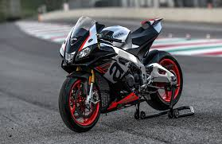

- Aprilia RSV4 RR
- Aprilia RSV4 1100
- Honda CBR 1000RR-R
- Ducati Panigale 1299
- Honda CBX1000
- Honda RC211V
- Honda VFR400


One of my hobbies is working on and riding motorcycles. This list will be slightly biased because I ride an Aprilia RSV4rr but I have picked what I think are the 7 best sounding motorcycles in no particular order
In particular I think that the RC211V is a really interesting bike because it is powered by a V-5 engine. Although these seem like they wouldn't balance here is a video on how it they work
Also, heres a cool tableau visulization on the Roman Emipire made by Nir Smilga